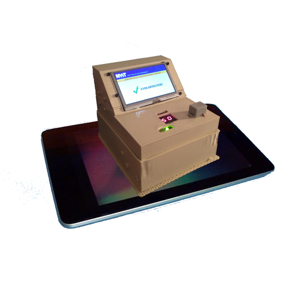
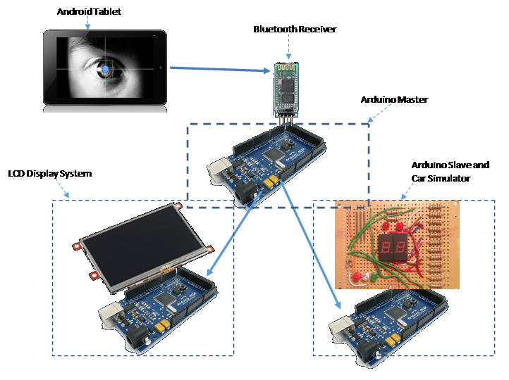
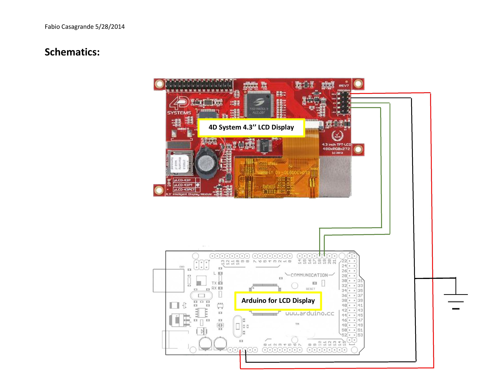
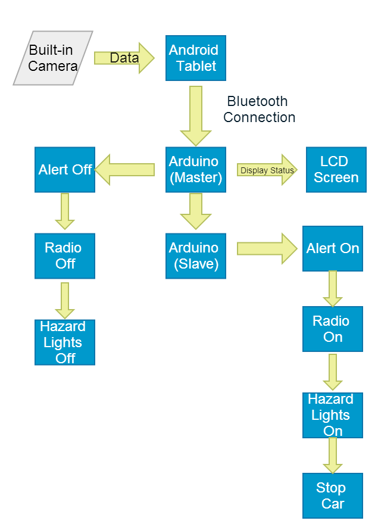
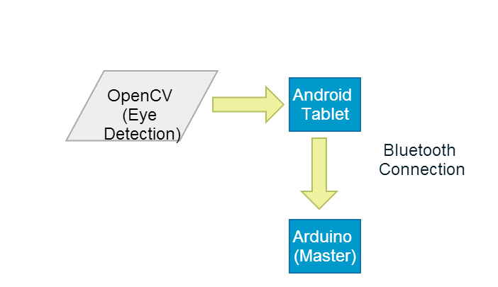
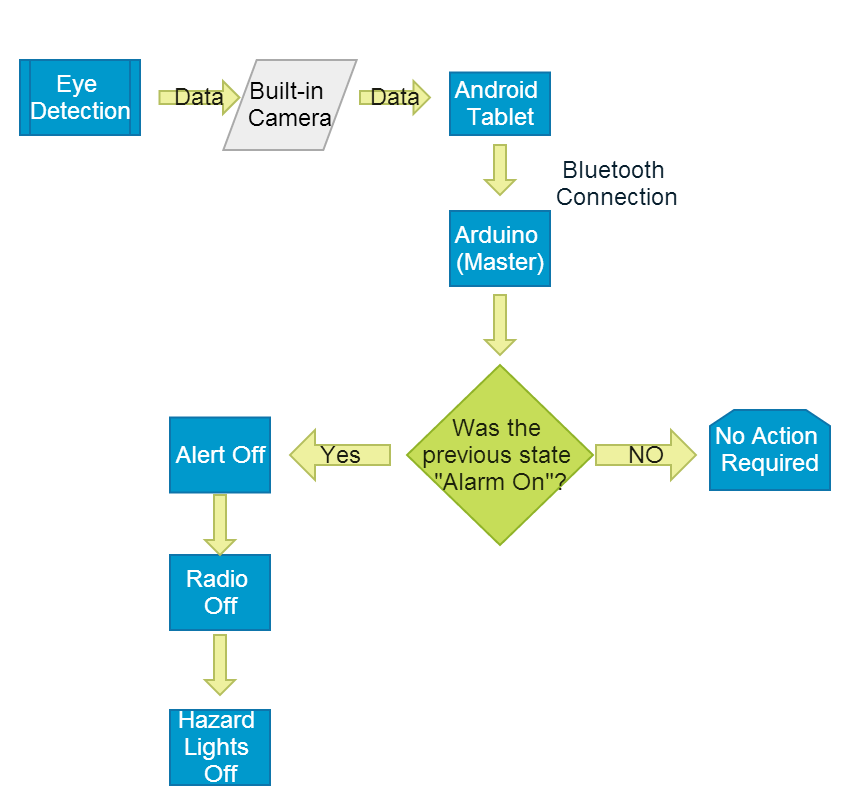
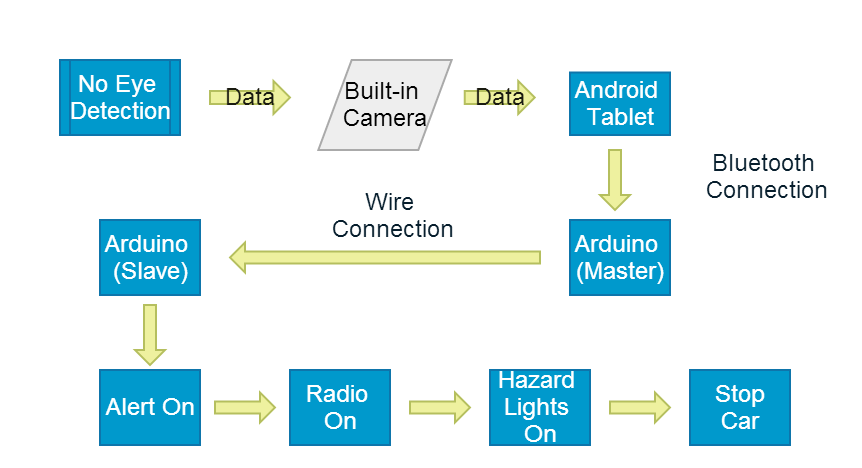

Drowsiness Monitoring System using Arduino microcontrollers,an Android Tablet,and a 4D Systems LCD Display.
The purpose of this project was to create a system that allows the user to safely drive while being monitored. This system would track the driver s eyes in real time and if he or she falls asleep, the system would turn up the volume of the radio and slow down the car until it stops.
System Design

The Android Tablet is connected to the Arduino Master through Bluetooth connection. The Arduino Master takes actions on the Arduino Slave and the LCD Display System according on the data received from the Android Tablet. On the Arduino Slave is mounted a printed circuit that simulates the car functions while the LCD Display System displays the states.
Schematics Serial Connections:

Car Simulator (Arduino Slave)

The car simulator is mainly composed by five LEDs and two 7-segment digital displays. On the bottom left side, there are three LEDs, the -Radio Volume Down-, the -Alarm On- and the -Radio Volume Up-. Located at the center of the board, there are two 7-segment digital displays that show the speed of the car. In the center upper part, there are two LEDs that simulate the four hazard lights of the car.
Schematics:

LCD Display Arduino 4D System 4.3

Both the Arduino Master and the Arduino
Slave controls the LCD Display. The LCD Display, according to the
Data coming in from the Arduinos, will change the states to display.
Schematics:

Diagrams
System Design:

The brain of the system is the Android
Tablet. The driver is monitored with the built-in camera of the
Tablet through an Open Source app. The app tracks the eyes of the
driver and, at the same time, sends signals to the Arduino
microcontroller. The real time eye tracking is also shown on the
screen of the Tablet. The Tablet communication with the Arduino is
through Bluetooth. According to the signal received from the Tablet,
the Arduino (master) has two decisions to take. If the signal says
that the eyes are not tracked, the Arduino (Master) activates the
Arduino (Slave). The main task of the Arduino (slave), once
activated, is to start a series of operations that will result in
stopping of the car only if the driver s eyes have not been detected
in a certain amount of time. The Arduino (Slave) is active only when
the eyes are not tracked from the software. On the other hand, if
the Arduino (master) receives the signal which says that the eyes
have been detected nothing happens. If in the previous state, the
eyes were not detected and now they are detected, the Arduino
(Master) will turn off the alerts. Each states will also be
displayed on the LCD Display.
Android Tablet App:

When you first open the Android Tablet
App, the app automatically connects the tablet to the Bluetooth
receiver installed on the Arduino (Master). Once the connection is
established, the app starts the eye monitoring and communicates with
the Arduino microcontroller.
Eye Detection Case

The data coming from the built-in camera will be analyzed from the app stored inside the Android Tablet. In this case, the eye is detected from the camera and the system will then have to make a decision. If the alert in the previous state was on, the system will then change the state of the alarm to off, turn off the hazard lights, and turn the radio off. Otherwise, if the alarm in the previews state was off, the system then will not take any actions on the car.
No Eye Detection Case

We can represent the -No Eye Detection
Case- in three phases. In the first phase, the App, through the
built-in camera, does not detect any eyes. The real time eye
tracking will still display the video on the Tablet but with no eye
tracked. In the second phase, the App sends an alert signal to the
Arduino (Master) which it will sends that signal to the Arduino
(Slave). The Arduino (Slave) will start the alert on. From the
moment that the alert is on, a countdown will start and it will take
4 seconds until the car stops. If in the meanwhile the eyes get
detected, the countdown will stop and the alert will go off.
References
Arduino Open Source:
4D Systems 4.3 VisiGenie Software:
Android Eye Tracking app:
- OpenCV: http://opencv.org
- Roman Hosek modified version of OpenCV:
http://romanhosek.cz/android-eye-detection-and-tracking-with-opencv/ (I made my own adjustment by adding few lines of code in the FdActivity.java file that allowed me to connect the android tablet to the arduino through bluetooth connection) In the Project.rar link, you can download the whole project. For the Android app, you hav to go on the folder called -Android- and then import on the sdk the folder --OpenCV-2.4.6-android-sdk--. The app is called - tutorial1-. You will havo also add a path for the NDK in your project,otherwise it will not run. Here is the link for the NDK:
https://developer.android.com/tools/sdk/ndk/index.html